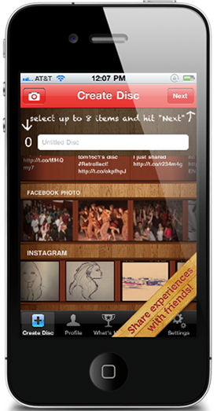
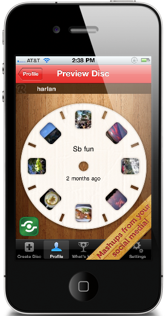
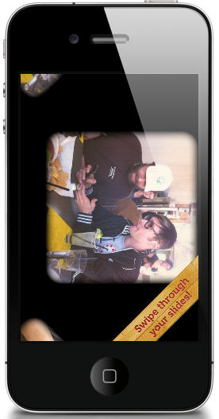

Retrollect was a media sharing app that was built as an experiment for SXSW in 2011. It allowed users to make collections of media from different services, as well as their camera roll, and share them as digital view master discs.
I did QA and usability testing for it during the lead up to its 1.0 release for Android and iOS, as well as the redesign as an iOS native app.